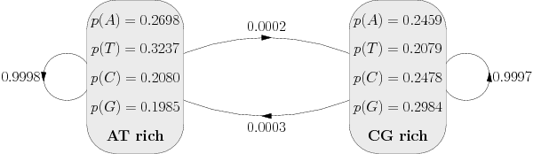

ECS
| Student Resources
| Courses
| Homepage
| Notes
Syllabus
| Books
| Notes
| Problems
| Software
| Resources
Tutorial 1 |
Tutorial 2 |
Tutorial 3 |
Tutorial 4
Tutorial 2: Week 3-5
- This will be marked in the lab session in week 5 by me
- Write a program to implement Needleman-Wunsch for proteins
- You will need the blosum50
scoring matrix
- You can use any programming language
- Run this on HEAGAWGHEE versus PAWHEAE
- Compare this to page 23
in lecture
5
- Match the protein sequence
SALPQPTTPVSSFTSGSMLGRTDTALTNTYSAL with PSPTMEAVTSVEASTASHPHSTSSYFATTYYHLY
- Modify your program to implement the Smith-Waterman
algorithm
- Again run this on HEAGAWGHEE versus PAWHEAE
- Compare this to page 5
in lecture 6
- Find the best local match between
MQNSHSGVNQLGGVFVNGRPLPDSTRQKIVELAHSGARPCDISRILQVSNGCVSKILGRY
and
TDDECHSGVNQLGGVFVGGRPLPDSTRQKIVELAHSGARPCDISRI
- We are going to test the BLAST algorithm
- Program the following HMM to generate CG rich regions

- Write a viterbi algorithm for finding the most likely CG
regions and find a way of drawing this
- Run this on the genome for
the phase
lambda or here
Intranet:
Student Resources
| Systems & Support
©2017 ECS, University of Southampton